In the context of this package, an “Adjusted Prediction” is defined as:
The response predicted by a model for some combination of the regressors’ values, such as their means or factor levels (a.k.a. “reference grid”).
An adjusted prediction is thus the regression-adjusted response variable (or link, or other fitted value), for a given combination (or grid) of predictors. This grid may or may not correspond to the actual observations in a dataset.
By default, predictions calculates the regression-adjusted predicted values for every observation in the original dataset:
library(marginaleffects)
mod <- lm(mpg ~ hp + factor(cyl), data = mtcars)
pred <- predictions(mod)
head(pred)
#> type predicted std.error conf.low conf.high mpg hp cyl
#> 1 response 20.03819 1.2041405 17.57162 22.50476 21.0 110 6
#> 2 response 20.03819 1.2041405 17.57162 22.50476 21.0 110 6
#> 3 response 26.41451 0.9619738 24.44399 28.38502 22.8 93 4
#> 4 response 20.03819 1.2041405 17.57162 22.50476 21.4 110 6
#> 5 response 15.92247 0.9924560 13.88952 17.95543 18.7 175 8
#> 6 response 20.15839 1.2186288 17.66214 22.65463 18.1 105 6In many cases, this is too limiting, and researchers will want to specify a grid of “typical” values over which to compute adjusted predictions.
Predictions over a “typical” data grid
There are two main ways to select the reference grid over which we want to compute adjusted predictions. The first is using the variables argument. The second is with the newdata argument and the datagrid() function that we already introduced in the marginal effects vignette.
variables: Levels and Tukey’s 5 numbers
The variables argument is a handy shortcut to create grids of predictors. Each of the levels of factor/logical/character variables listed in the variables argument will be displayed. For numeric variables, predictions will compute adjusted predictions at Tukey’s 5 summary numbers. All other variables will be set at their means or modes.
predictions(mod, variables = c("cyl", "hp"))
#> type predicted std.error conf.low conf.high cyl hp
#> 1 response 27.40010 1.0595843 25.229639 29.57056 4 52
#> 2 response 21.43244 1.6083883 18.137810 24.72708 6 52
#> 3 response 18.87925 2.5641372 13.626851 24.13165 8 52
#> 4 response 26.34239 0.9707174 24.353966 28.33081 4 96
#> 5 response 20.37474 1.2562453 17.801433 22.94804 6 96
#> 6 response 17.82154 1.9364843 13.854831 21.78825 8 96
#> 7 response 25.69334 1.1343184 23.369796 28.01689 4 123
#> 8 response 19.72569 1.1892191 17.289682 22.16169 6 123
#> 9 response 17.17249 1.5721502 13.952087 20.39289 8 123
#> 10 response 24.32313 1.7749372 20.687334 27.95892 4 180
#> 11 response 18.35547 1.4848895 15.313815 21.39713 6 180
#> 12 response 15.80228 0.9537705 13.848567 17.75599 8 180
#> 13 response 20.59711 4.0024363 12.398490 28.79573 4 335
#> 14 response 14.62945 3.4865450 7.487590 21.77132 6 335
#> 15 response 12.07626 2.1126445 7.748702 16.40381 8 335The data.frame produced by predictions is “tidy”, which makes it easy to manipulate with other R packages and functions:
library(kableExtra)
library(tidyverse)
predictions(mod, variables = c("cyl", "hp")) %>%
select(hp, cyl, predicted) %>%
pivot_wider(values_from = predicted, names_from = cyl) %>%
kbl(caption = "A table of Adjusted Predictions") %>%
kable_styling() %>%
add_header_above(header = c(" " = 1, "cyl" = 3))| hp | 4 | 6 | 8 |
|---|---|---|---|
| 52 | 27.40010 | 21.43244 | 18.87925 |
| 96 | 26.34239 | 20.37474 | 17.82154 |
| 123 | 25.69334 | 19.72569 | 17.17249 |
| 180 | 24.32313 | 18.35547 | 15.80228 |
| 335 | 20.59711 | 14.62945 | 12.07626 |
newdata and datagrid
A second strategy to construct grids of predictors for adjusted predictions is to combine the newdata argument and the datagrid function. Recall that this function creates a “typical” dataset with all variables at their means or modes, except those we explicitly define:
We can also use this datagrid function in a predictions call (omitting the model argument):
predictions(mod, newdata = datagrid())
#> type predicted std.error conf.low conf.high hp cyl
#> 1 response 16.60307 1.278754 13.98366 19.22248 146.6875 8
predictions(mod, newdata = datagrid(cyl = c(4, 6, 8)))
#> type predicted std.error conf.low conf.high hp cyl
#> 1 response 25.12392 1.368888 22.31988 27.92796 146.6875 4
#> 2 response 19.15627 1.247190 16.60151 21.71102 146.6875 6
#> 3 response 16.60307 1.278754 13.98366 19.22248 146.6875 8Users can change the summary function used to summarize each type of variables using the FUN.numeric, FUN.factor, and related arguments, for example substituting the mean for the median.
counterfactual data grid
An alternative approach to construct grids of predictors is to use grid.type = "counterfactual" argument value. This will duplicate the whole dataset, with the different values specified by the user.
For example, the mtcars dataset has 32 rows. This command produces a new dataset with 64 rows, with each row of the original dataset duplicated with the two values of the am variable supplied (0 and 1):
mod <- glm(vs ~ hp + am, data = mtcars, family = binomial)
nd <- datagrid(model = mod, am = 0:1, grid.type = "counterfactual")
dim(nd)
#> [1] 64 3Then, we can use this dataset and the predictions function to create interesting visualizations:
pred <- predictions(mod, newdata = datagrid(am = 0:1, grid.type = "counterfactual")) %>%
select(am, predicted, rowid_original) %>%
pivot_wider(id_cols = rowid_original,
names_from = am,
values_from = predicted)
ggplot(pred, aes(x = `0`, y = `1`)) +
geom_point() +
geom_abline(intercept = 0, slope = 1) +
labs(x = "Predicted Pr(vs=1), when am = 0",
y = "Predicted Pr(vs=1), when am = 1")
In this graph, each dot represents the predicted probability that vs=1 for one observation of the dataset, in the counterfactual worlds where am is either 0 or 1.
Average Adjusted Predictions (AAP)
An “Average Adjusted Prediction” is the outcome of a two step process:
- Create a new dataset with each of the original regressor values, but fixing some regressors to values of interest.
- Take the average of the predicted values in this new dataset.
We can compute the AAP by using the datagrid function and some dplyr magic:
predictions(mod, newdata = datagrid(am = 0, grid.type = "counterfactual")) %>%
summarize(across(c(predicted, std.error), mean))
#> predicted std.error
#> 1 0.5261185 0.04275179Or we can compute several AAPs simultaneously:
Adjusted Prediction at the Mean (APM)
Some analysts may want to calculate an “Adjusted Prediction at the Mean,” that is, the predicted outcome when all the regressors are held at their mean (or mode). To achieve this, we use the datagrid function. By default, this function produces a grid of data with regressors at their means or modes, so all we need to do to get the APM is:
predictions(mod, newdata = datagrid())
#> type predicted std.error conf.low conf.high hp am
#> 1 response 0.06308965 0.08662801 0.003794253 0.543491 146.6875 0.40625Plot: Conditional Predictions
First, we download the ggplot2movies dataset from the RDatasets archive. Then, we create a variable called certified_fresh for movies with a rating of at least 8. Finally, we discard some outliers and fit a logistic regression model:
library(tidyverse)
dat <- read.csv("https://vincentarelbundock.github.io/Rdatasets/csv/ggplot2movies/movies.csv") %>%
mutate(style = case_when(Action == 1 ~ "Action",
Comedy == 1 ~ "Comedy",
Drama == 1 ~ "Drama",
TRUE ~ "Other"),
style = factor(style),
certified_fresh = rating >= 8) %>%
filter(length < 240)
mod <- glm(certified_fresh ~ length * style, data = dat, family = binomial)We can plot adjusted predictions, conditional on the length variable using the plot_cap function:
mod <- glm(certified_fresh ~ length, data = dat, family = binomial)
plot_cap(mod, condition = "length")
We can also introduce another condition which will display a categorical variable like style in different colors. This can be useful in models with interactions:
mod <- glm(certified_fresh ~ length * style, data = dat, family = binomial)
plot_cap(mod, condition = c("length", "style"))
Of course, you can also design your own plots or tables by working with the predictions output directly:
predictions(mod,
type = c("response", "link"),
newdata = datagrid(length = 90:120,
style = c("Action", "Comedy"))) %>%
ggplot(aes(length, predicted, color = style)) +
geom_line() +
facet_wrap(~type, scales = "free_y")
Prediction types
The predictions function computes model-adjusted means on the scale of the output of the predict(model) function. By default, predict produces predictions on the "response" scale, so the adjusted predictions should be interpreted on that scale. However, users can pass a string or a vector of strings to the type argument, and predictions will consider different outcomes.
Typical values include "response" and "link", but users should refer to the documentation of the predict of the package they used to fit the model to know what values are allowable. documentation.
mod <- glm(am ~ mpg, family = binomial, data = mtcars)
pred <- predictions(mod, type = c("response", "link"))
head(pred)
#> type predicted std.error conf.low conf.high am mpg
#> 1 response 0.4610951 0.11584004 0.2554723 0.6808686 1 21.0
#> 2 response 0.4610951 0.11584004 0.2554723 0.6808686 1 21.0
#> 3 response 0.5978984 0.13239819 0.3356711 0.8139794 1 22.8
#> 4 response 0.4917199 0.11961263 0.2746560 0.7119512 0 21.4
#> 5 response 0.2969009 0.10051954 0.1411369 0.5204086 0 18.7
#> 6 response 0.2599331 0.09782666 0.1147580 0.4876032 0 18.1Users who need more control over the type of adjusted predictions to compute, including a host of options for back-transformation, may want to consider the emmeans package.
We can also plot predictions on different outcome scales:
plot_cap(mod, condition = "mpg", type = "response")
plot_cap(mod, condition = "mpg", type = "link")